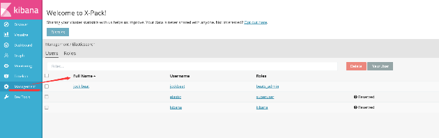

-
前言
elasticsearch，logstash随着kibana的命名升级直接从2.4跳跃到了5.0，5.x版本的elk在版本对应上要求相对较高，不再支持5.x和2.x的混搭，同时elastic做了一个package，对原本的watch，alert做了一个封装，形成了x-pack，也就是下面我们要讨论的内容
简介
x-pack是elasticsearch的一个扩展包，将安全，警告，监视，图形和报告功能捆绑在一个易于安装的软件包中，虽然x-pack被设计为一个无缝的工作，但是你可以轻松的启用或者关闭一些功能
安装
Elasticsearh：bin/elasticsearch-plugin install x-pack
（es如果是一个集群，在每一个节点上安装）
Kibana：bin/kibana-plugin install x-pack
用户管理
x-pack安装之后有一个超级用户elastic ，其默认的密码是changeme，拥有对所有索引和数据的控制权，可以使用该用户创建和修改其他用户，当然这里可以通过kibana的web界面进行用户和用户组的管理

也可以使用shell 终端进行管理：
修改elastic用户的密码：curl -XPUT -u elastic 'localhost:9200/_xpack/security/user/elastic/_password' -d '{ "password" : "123456" }'修改kibana用户的密码：
curl -XPUT -u elastic 'localhost:9200/_xpack/security/user/kibana/_password' -d '{ "password" : "123456" }'创建用户组和角色，创建所属用户
eg：创建beats_admin用户组，该用户组对filebeat*有all权限，对.kibana*有manage，read，index权限curl -XPOST -u elastic 'localhost:9200/_xpack/security/role/beats_admin' -d '{ "indices" : [ { "names" : [ "filebeat*" ], "privileges" : [ "all" ] }, { "names" : [ ".kibana*" ], "privileges" : [ "manage", "read", "index" ] } ] }'创建jockbeat用户，密码是jockbeat
curl -XPOST -u elastic 'localhost:9200/_xpack/security/user/jockbeat' -d '{ "password" : "jockbeat", "full_name" : "jock beat", "email" : "john.doe@anony.mous", "roles" : [ "beats_admin" ] }'
保护级别
X-pack提供以下几个级别保护elastic集群
用户验证授权和基于角色的访问控制节点/客户端认证和信道加密审计1：启动消息身份验证，验证消息在传输的过程中未被篡改或者修改
bin/x-pack/syskeygen
如果es是一个集群，请将生成的密钥复制到集群的其他节点
2：启动审核以跟踪与您的elasticsearch集群的尝试与成功的交互vim config/elasticsearch.yml
xpack.security.audit.enabled: true
x-pack的权限保护
安装完x-pack，登录elasticsearch和kibana会让你输入密码


X-pack的elk之间的数据传递保护
安装完x-pack之后，我们就可以用我们所创建的用户来保护elk之间的数据传递
1：kibana<——>elasticsearch
在kibana.yml文件中配置：
elasticsearch.username: “elastic”
elasticsearch.password: “changeme”2：logstash<——>elasticsearch
在自己写的配置文件中定义
input { stdin{} beats{ port => 5044 } } output { elasticsearch { hosts => ["http://localhost:9200"] user => elastic password => changeme } stdout{ codec=>rubydebug } }这里如果不进行相关配置的话，elk之间的数据传递就会出现问题
x-pack的监控功能
取消X-Pack监控组件使您能够通过Kibana轻松监控Elasticsearch。 您可以实时查看集群运行状况和性能，以及分析过去的集群，索引和节点指标。 此外，您可以监控Kibana本身的性能。
在群集上安装X-Pack时，监视代理会在每个节点上运行，以从Elasticsearch收集索引指标。 通过在Kibana中安装X-Pack，您可以通过一组专用仪表板查看监视数据
elasticsearch：

kibana：

配置监控的索引：
编辑elasticsearch.yml，假设监控logstash-*，index1,test2索引
xpack.monitZ喎"http://www.2cto.com/kf/ware/vc/" target="_blank" class="keylink">vcmluZy5jb2xsZWN0aW9uLmluZGljZXM6IGxvZ3N0YXNoLSosIGluZGV4MSwgdGVzdDI8YnIgLz4NCsT6v8nS1NTax7DD5rzTyc8ru/IgLSDAtM/Uyr2w/Lqsu/LFxbP9y/fS/cP7s8a78sSjyr2hoyDA/cjno6zSqrD8wKjS1HRlc3S/qs23tcTL+dPQy/fS/aOodGVzdDOz/c3io6mjrL/J0tTWuLaoKyB0ZXh0ICqjrCAtIHRlc3QzoaM8L3A+DQo8cD7J6NbDtaW2wLXEvK/Iurzgv9ijujxiciAvPg0KaHR0cHM6Ly93d3cuZWxhc3RpYy5jby9ndWlkZS9lbi94LXBhY2svY3VycmVudC9tb25pdG9yaW5nLWNsdXN0ZXIuaHRtbDwvcD4NCjxociAvPg0KPGgxIGlkPQ=="x-pack的alert">x-pack的alert总体上来将和之前的单独产品watch并没有什么太大的区别，这里我们只是简单的看下x-pack的alert功能，更多详细内容参考官网
https://www.elastic.co/guide/en/x-pack/current/xpack-alerting.html当watch被触发的时候，数据将会被加载到执行的context中，watch支持四种输入：
Simple：加载静态的数据到execution context中 Search：加载搜索的结果到execution context中 Http：将Http请求的结果加载到execution context中 chain：使用一系列输入将数据加载到execution context中每个watch必须有一个触发器触发watch的执行开始，watch旨在支持不同类型的的触发器，但只有基于时间戳的计划触发器目前可用，watch提供了以下几种类型的时间过滤器
Hourly Daily Weekly Monthly Yearly Cron Interval例如创建一个每小时的watch监控（每半个小时启动一次）
{ "trigger" : { "schedule" : { "hourly" : { "minute" : 30 } } } }配置一个每小时多时间的watch（每15分钟启动一次）
{ "trigger" : { "schedule" : { "hourly" : { "minute" : [ 0, 15, 30, 45 ] } } } }
x-pack的Graph
https://www.elastic.co/guide/en/x-pack/current/graph-getting-started.html